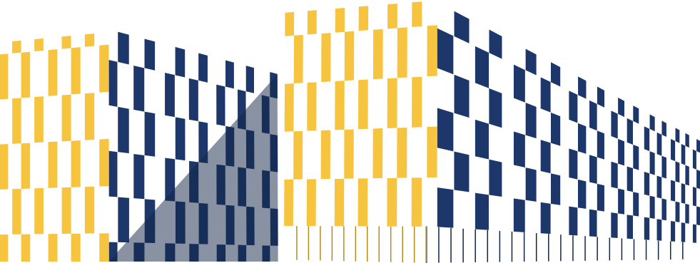

Talks

Upcoming Talks
| Markus Krabbe Larsen: Sound rules for building Sigma-protocols (in Rocq) | Mar 3 |
| Rasmus Møgelberg: Linear and Graded Types for Memory Safety | Mar 20 |
Spring 2026
| Sergei Stepanenko: Towards Guarded Type Theory in Lean | Feb 27 |
Autumn 2025
| Marino Miculan (Udine): Towards a Formally Verified Language for Stateful Authorization Policies | Dec 8 |
| Eike Ritter (Birmingham): Skolemisation for Intuitionistic Linear Logic | Nov 25 |
| Jens Christian Godskesen: Quantum Programming - From the perspective of a computer scientist | Nov 13 |
| Maaike Zwart: Sketches of a distributive law | Oct 2 |
| Alessandro Bruni: Formalizing Concentration Inequalities in Rocq: Infrastructure and Automation | Sep 25 |
| Takafumi Saikawa (Nagoya University): Formalization of matching numbers with finmap and mathcomp-classical | Sep 25 |
| Patrick Bahr: A simple modal type system for functional reactive programming without space leaks | Sep 18 |
| Marco Carbone: Using Linearity Predicates to handle Linearity in Rocq, A Tutorial | Sep 10 |
| Joshua Smart (University of Southampton): Implementation of a Rocq Backend to the Vehicle Neural Network Specification Language | Aug 19 |
Spring 2025
| Lyes Saadi | Jun 25 |
| Rasmus Møgelberg: Induction and Recursion Principles in a Higher-Order Quantitative Logic | May 28 |
| Matteo Acclavio (Sussex): Formulas as Processes in Linear Logic Programming | May 14 |
| Grant application discussions | Apr 9 |
| Joris Ceulemans (KU Leuven): Multimode Type Theory as a Library in Type Theory | Apr 8 |
| Philipp Haselwarter (Aarhus): Security Proofs via Approximate Relational Reasoning for Higher-Order Probabilistic Programs | Apr 7 |
| Grant application discussions | Apr 2 |
| Sergei Stepanenko (Aarhus): Solving Guarded Domain Equations in Presheaves Over Ordinals and Mechanizing It | Mar 26 |
| Nobuko Yoshida (Oxford): Separation and Encodability in Mixed Choice Multiparty Sessions | Feb 21 |
Autumn 2024
| Simon Gay (Glasgow): Trains, Pictures and Types | Dec 11 |
| Marino Miculan (Udine): A Bigraph-based Formal Model and Verification Framework for Container-Based Systems | Dec 9 |
| Eric Giovannini (University of Michigan): Denotational Semantics of Gradual Typing using Synthetic Guarded Domain Theory | Nov 26 |
| PLS research day (all day) | Nov 22 |
| Maaike Zwart: Self-Distributing Monads | Nov 19 |
| Patrick Bahr: Calculating Graph-Based Compilers | Sep 10 |
| Rasmus Møgelberg: An introduction to synthetic guarded domain theory with applications to probabilistic programming languages. | Aug 27 |
Spring 2024
| Pawel Sobocinski (TalTech) | Jun 25 |
| Markus Krabbe Larsen: Mechanizing state separation for modular cryptographic proofs | May 30 |
| Giorgio Bacci (Aalborg): Two Propositional Logics for the Lawvere Quantale. In 4A05 | May 6 |
| Alessandro Bruni: Exploration of properties of differentiable logics through mechanisation. In 3A07. | Apr 9 |
| Daniel Gratzer (Aarhus): A modal deconstruction of Loeb induction | Mar 14 |
| Markus Krabbe Larsen: Adjoint Affine Interpretation | Mar 12 |
| Marco Carbone: A Probabilistic Choreography Language for PRISM | Mar 8 |
| Dmitriy Traytel (DIKU): Binding-aware datatypes and inductive predicates in Isabelle/HOL | Feb 27 |
| Maaike Zwart: What monads can and cannot do with a bit of extra time. | Feb 13 |
Autumn 2023
| Brigitte Pientka: Mechanizing Session-Types: Enforcing linearity without linearity. In Aud4 (Monday) | Dec 4 |
| Lean Course | Nov 28 |
| Lean Course | Nov 21 |
| Lean Course | Nov 14 |
| Emil Ørup Kristensen: Secure Choreographies in PSPSP/Isabelle | Oct 3 |
| Mahsa Varshosaz: Formal Specification and Testing for Reinforcement Learning | Sep 5 |
| Patrick Bahr: Modal FRP For All. | Aug 22 |
Spring 2023
| Ekaterina Komendantskaya (Heriot-Watt): Integrated Neural Network Verification with Vehicle | May 24 |
| Natalia Slusarz (Heriot-Watt): Logic of Differentiable Logics: Towards a Uniform Semantics of DL | May 22 |
| Ichiro Hasuo (National Institute of Informatics, Japan): Proving Safety of Automated Driving Vehicles. Online talk. | May 16 |
| Carsten Schürmann: Tick Unify | May 2 |
| Jimmy Koppen (MIT): Meta-metaprogramming | Apr 11 |
| Raul Pardo Jimenez: Formal Verification of Privacy Policies for Social Networks (Joint PLS/Square) | Mar 31 |
| Reynald Affeldt (AIST) and Takafumi Saikawa (Nagoya) | Mar 21 |
| Carsten Schürmann: Postponed | Mar 7 |
| No talk, just meetings | Feb 7 |
| Dawit Tirore: Sound and complete projection of multi-party protocols | Jan 25 |
Autumn 2022
| Rasmus Møgelberg | Dec 13 |
| Jon Sterling (Aarhus University) | Nov 8 |
| Adele Veschetti (University of Bologna): A formal analysis of blockchain consensus protocols | Nov 1 |
| Yannick Zakowski (Inria): Monadic Definitional Interpreters as Formal Semantic Models of Computations in Coq | Oct 4 |
| Frederik Haagensen: Incentive Alignment through Secure | Sep 5 |
Spring 2022
| Sebastian Mödersheim (DTU): Joint PLS/CISAT talk | Jun 17 |
| Philip Munksgaard (DIKU) | Jun 7 |
| Christoph Matheja (DTU): Joint PLS/Square talk | May 25 |
| Tim Steenvoorden (Open University the Netherlands) | May 18 |
| Tarmo Uustalu (Reykjavik): Over Zoom | Apr 26 |
| Alejandro Aguirre (Aarhus) | Apr 7 |
| Mikkel Kragh Mathiesen (DIKU) | Mar 29 |
| Carsten Schürmann | Mar 15 |
| Jonas Kastberg Hinrichsen (Aarhus): Cancelled | Feb 15 |
| Rasmus Lerchedahl Petersen (GitHub): Static analysis at GitHub Scale | Feb 11 |
Autumn 2021
We meet Tuesdays 12-13.| Patrick Bahr | Sep 10 |
| Jesper Bengtson | Sep 24 |
| Antoine van Muylder (Vrije Universiteit Brussel) | Oct 5 |
| Dawit Tiore | Nov 16 |
| Rasmus Lerchedahl Petersen (GitHub): Cancelled | Nov 30 |
| Niccolò Veltri (Tallinn) | Dec 7 |
| Patricia Johann (Appalachian State University) | Dec 14 |
Spring 2021
We meet Fridays 12-13. For the time being meetings are virtual. Invitation will appear in calendars. If you would like to attend or give a talk, email Rasmus.| No talk, catch-up meeting | Feb 12 |
| Magnus Baunsgaard Kristensen | Feb 26 |
| Christian Uldal Graulund: PhD defence | Mar 12 |
| Willard Rafnsson | Mar 19 |
| Alceste Scalas: Effpi: Verified Message-Passing Programs in Scala 3 | Mar 26 |
| Maaike Zwart | Apr 9 |
| Alex Kavvos (Bristol) | Apr 16 |
| Rasmus Møgelberg | Apr 23 |
| Louis Parlant | May 28 |
| Maja Hanne Kirkeby (RUC) | Jun 4 |
Autumn 2020
| Marco Carbone: A Characterisation of Coherence as Linear Logic Proofs | Oct 6 |
| Jonas Kastberg Hinrichsen: Mechanising Type Systems using Semantic Typing | Oct 20 |
| Christian Uldal Graulund | Nov 5 |
| Willard Rafnsson | Nov 17 |
Spring 2020
This semester we meet Tuesdays 12-13 in 3A08 unless otherwise noted.| Marco Carbone: Towards a Logic of Forwarders | Feb 4 |
| Søren Debois | Apr 17 |
| Daniel Gratzer (Aarhus) | May 18 |
Autumn 2019
This semester we meet Tuesdays 12-13 in 4A05 unless otherwise noted.| Guillaume Munch-Maccagnoni: From systems programming to linear logic, and back | Aug 1 |
| No talk, just discussions | Sep 3 |
| Talk cancelled | Sep 17 |
| Andreas Nuyts: Dependent type theory with modalities and modes | Sep 23 |
| Alessandro Bruni | Oct 1 |
| Jesper Bengtson | Oct 24 |
| Patrick Bahr: Calculating Correct Compilers – How to Implement Compilers by Proving Their Correctness First | Nov 12 |
| Andrea Vezzosi: Formalizing π-calculus in Guarded Cubical Agda | Dec 4 |
| Christian Sattler: Higher categorical structure in HoTT | Dec 5 |
| Hugo Andres Lopez | Dec 10 |
Spring 2019
In the Spring of 2019 PLS lunch talk are usually every other Wednesday 12-13 in 3A07| No talk just discussions | Jan 29 |
| Willard Rafnsson: Types for Information-Flow Control in Functional Programming Languages | Feb 21 |
| Jonas Kastberg Hinrichsen: Formal Verification of Distributed Systems in Iris | Mar 13 |
| Andrea Vezzosi: Higher Inductive Types in Cubical Agda | Mar 27 |
| Dima Szamozvancev: Well-typed music does not sound wrong | Apr 10 |
| Carsten Schürmann: Intro to LF | May 8 |
| Adrien Guatto (IRIF, Paris): A Basis for Synchronous Functional Programming | May 14 |
| Carsten Schürmann: Intro to LF continued | May 15 |
| Sonia Marin: Justification logic for modal logics on an intuitionistic base | May 29 |
Autumn 2018
In the Autumn of 2018 PLS lunch talk are usually every other Tuesday 12-13| No talk, just discussions | Sep 4 |
| Patrick Bahr: Strict Ideal Completions of the Lambda Calculus | Sep 18 |
| Niccolo Veltri: Bisimulation as path type for guarded recursive types | Oct 2 |
| No talk | Nov 20 |
| Marco Carbone: An Introduction to Multiparty Session Types and their Logical Interpretation | Dec 4 |
| Rasmus Møgelberg: An invitation to presheaf semantics of type theory. | Dec 18 |
Spring 2018
In the Spring of 2018 PLS lunch talk are usually every other Tuesday 12-13| No talk, just discussions | Feb 27 |
| Eva Graversen and Nobuko Yoshida | Mar 8 |
| Christian Uldal Graulund | Mar 13 |
| Jonas Kastberg Hinrichsen | Apr 24 |
| Jesper Bengtson | May 8 |
| Willard Rafnsson | May 28 |
| Rasmus Møgelberg and Bassel Mannaa: Two talks | Jun 14 |
Autumn 2017
In the Fall of 2017 PLS lunch talks usually take place on every other Tuesday 12-13 in 2A08.| Oscar Toro: The Bitcoin Backbone Protocol | Sep 6 |
| Jonas Kastberg Hinrichsen: Specification of object oriented languages in practice | Sep 19 |
| Niccolo Veltri: Finiteness and rational sequences, constructively | Oct 3 |
| Formalisations using two-level type theory | Oct 5 |
| Cancelled | Oct 31 |
| Danel Ahman: A fibrational view on computational effects | Nov 13 |
| Hugo A. Lopez | Nov 14 |
| Anupam Das (U. Copenhagen) | Nov 28 |
| Sonia Marin | Dec 12 |
Spring 2017
In the Spring of 2017 PLS lunch talks usually take place on every other Thursday 12-13 in 3A08.| No talk, just discussions | Feb 2 |
| Rosario Giustolisi | Feb 16 |
| Christian Uldal Graulund | Mar 16 |
| Bas Spitters (Aarhus): Colimits in homotopy type theory. | Mar 24 |
| Agata Murawska: Lincx: A Linear Logical Framework with First-class Context | Mar 30 |
| Patrick Bahr: The clocks are ticking: No more delays! | May 23 |
| Rasmus Møgelberg: Presheaf semantics for Guarded Dependent Type Theory | May 23 |
| Bassel Mannaa: Stack Semantics of Type Theory | Jun 8 |
Autumn 2016
In the Fall of 2016 PLS lunch talks usually take place on every other Thursday 12-13 in 3A08.| Marco Carbone: Coherence Generalises Duality: a logical explanation of multiparty session types | Sep 1 |
| Peter Brottveit Bock | Sep 29 |
| Meeting cancelled. | Oct 13 |
| Håkon Normann: Non-interleaving opperational semantics for late and early Pi-calculus | Nov 10 |
| Bassel Mannaa | Nov 24 |
Spring 2016
Talks from Spring 2016| Alessandro Bruni: AIF-ω: Set-based Protocol Abstraction with Countable Families. | Feb 4 |
| Robin Kaarsgaard (U. Copenhagen) | Feb 18 |
| Hans Bugge Grathwohl (Aarhus) | Mar 17 |
| Alec Faithful: Coqoon: an IDE for interactive proof development in Coq | Mar 31 |
| Søren Debois | Apr 28 |
| Michael Denzel (U. Birmingham) | Jun 10 |
Autumn 2015
In the Fall of 2015 PLS lunch talks usually take place on Thursdays in 3A08 unless otherwise noted.| Patrick Bahr: Certified Symbolic Management of Financial Multi-party Contracts | Aug 27 |
| Peter Brottveit Bock: A linear contextual logical Framework. | Sep 3 |
| Marco Carbone: Multiparty Session Types as Coherence Proofs | Sep 17 |
| Thomas Bolander (DTU): Building Planning Agents with Higher-Order Reasoning Capabilities | Sep 18 |
| Paul Blain Levy (Birmingham): Transition systems over games | Sep 21 |
| Cinzia Di Giusto (Nice, Sophia Antipolis): A Multyparty Session Type discipline for Event-Based Runtime Adaptation | Oct 1 |
| Marco Paviotti: Formally verifying exceptions for low-level code with Separation Logic | Oct 19 |
| TBD | Oct 29 |
| Robbert Krebbers (Aarhus): Formalizing C in Coq | Nov 11 |
| Agata Anna Murawska: Towards an happy marriage: Linear Logic and Beluga | Nov 12 |
| Marie Kerjean (PPS Paris): The computational content of derivation | Nov 26 |
| Marco Paviotti: Synthetic Guarded Domain Theory: Recursion in Guarded Recursion. | Dec 10 |
| Lorena Ronquillo | Dec 17 |